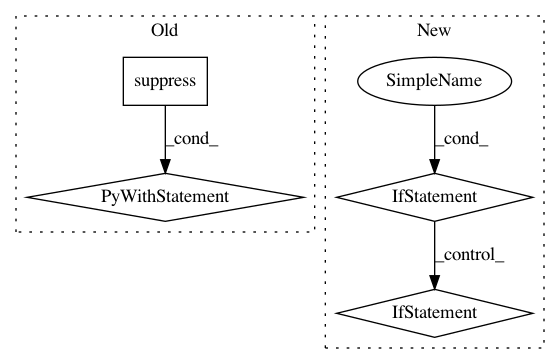

565bfe890fa85b433bf1be04189212000b3cd327,ggplot/geoms/geom.py,geom,_make_stat,#geom#,216
Before Change
kwargs
kwargs = self._cache["kwargs"]
with suppress(KeyError):
if isinstance(kwargs["stat"], stat):
return kwargs["stat"]
name = "stat_{}".format(
kwargs.get("stat", self.DEFAULT_PARAMS["stat"]))
stat_klass = gg_import(name)
recognized = ((stat_klass.aesthetics() |
After Change
// More stable when reloading modules than
// using issubclass
if (not isinstance(stat_klass, type) and
hasattr(stat_klass, "compute_layer")):
return stat_klass
if isinstance(stat_klass, six.string_types):
if not stat_klass.startswith("stat_"):
stat_klass = "stat_{}".format(stat_klass)
stat_klass = gg_import(stat_klass)
try:
recognized = (
In pattern: SUPERPATTERN
Frequency: 3
Non-data size: 4
Instances
Project Name: has2k1/plotnine
Commit Name: 565bfe890fa85b433bf1be04189212000b3cd327
Time: 2016-04-13
Author: has2k1@gmail.com
File Name: ggplot/geoms/geom.py
Class Name: geom
Method Name: _make_stat
Project Name: has2k1/plotnine
Commit Name: 23e7d20abbcec065a63c0ec31f5dcca481f41615
Time: 2018-06-26
Author: has2k1@gmail.com
File Name: plotnine/aes.py
Class Name:
Method Name: rename_aesthetics
Project Name: has2k1/plotnine
Commit Name: 98250a167fba43736bde5875007b0cf9fee05257
Time: 2019-12-06
Author: has2k1@gmail.com
File Name: plotnine/layer.py
Class Name: layer
Method Name: compute_aesthetics